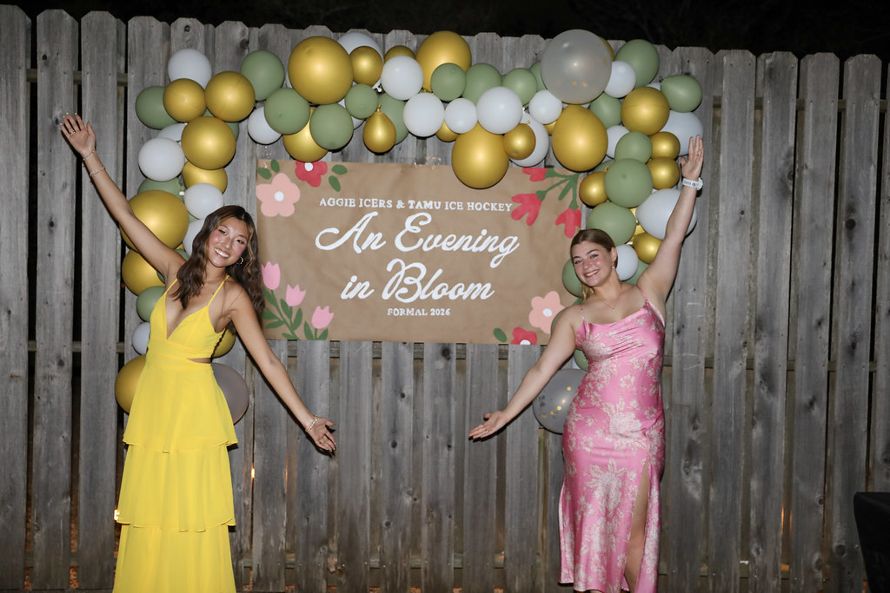
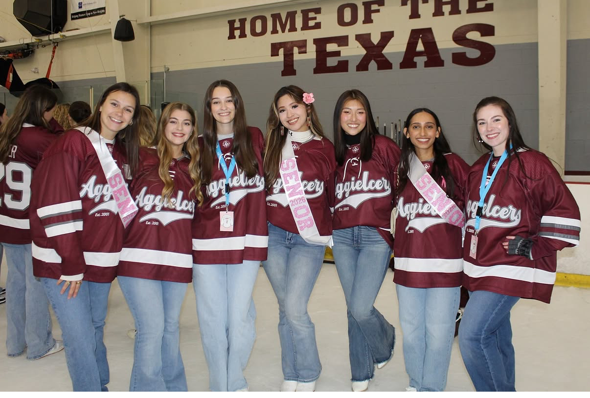
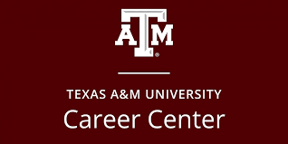
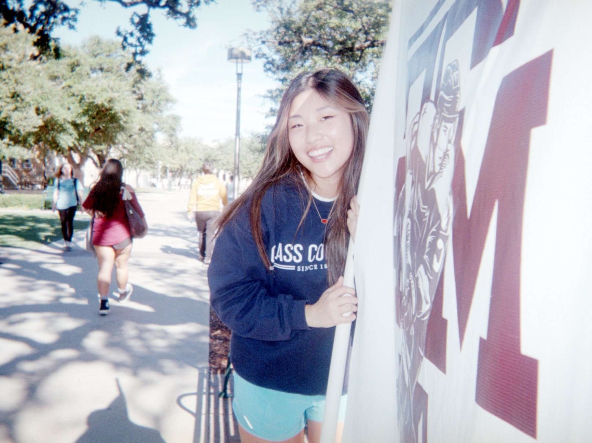
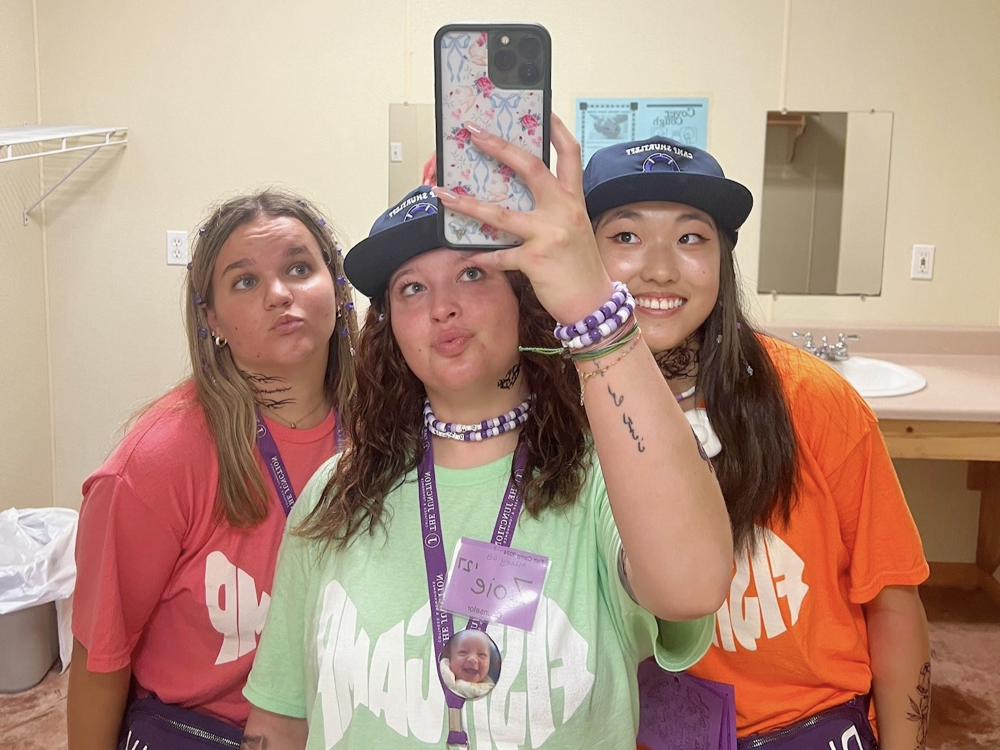
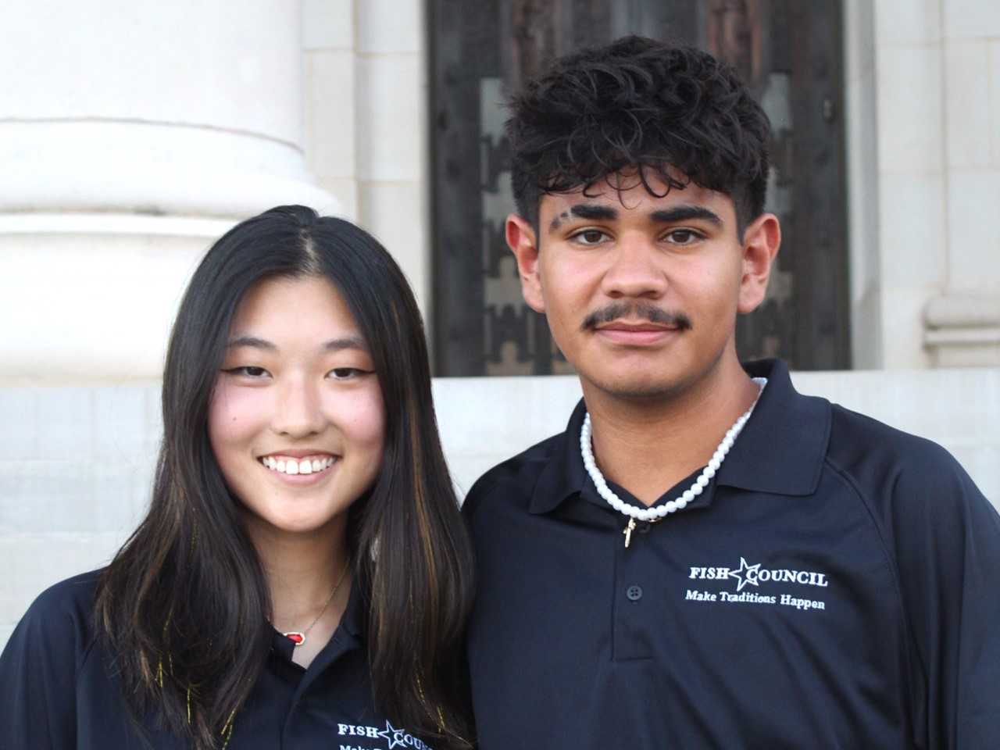
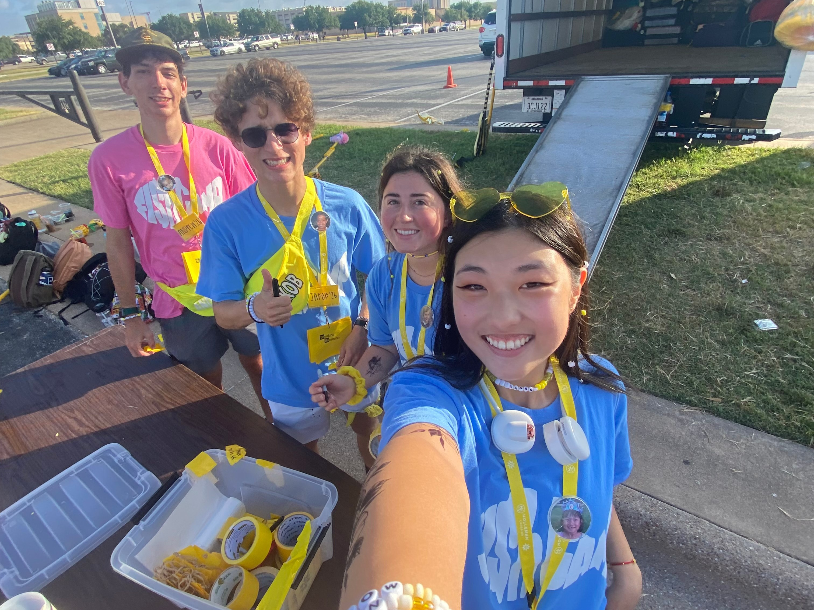
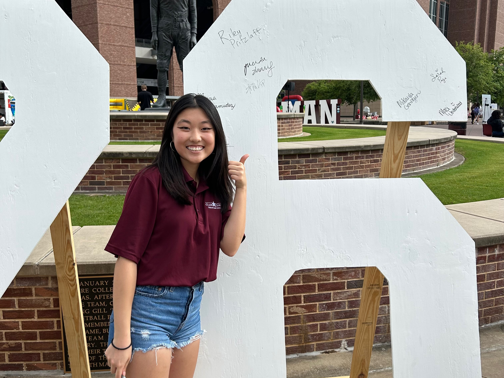
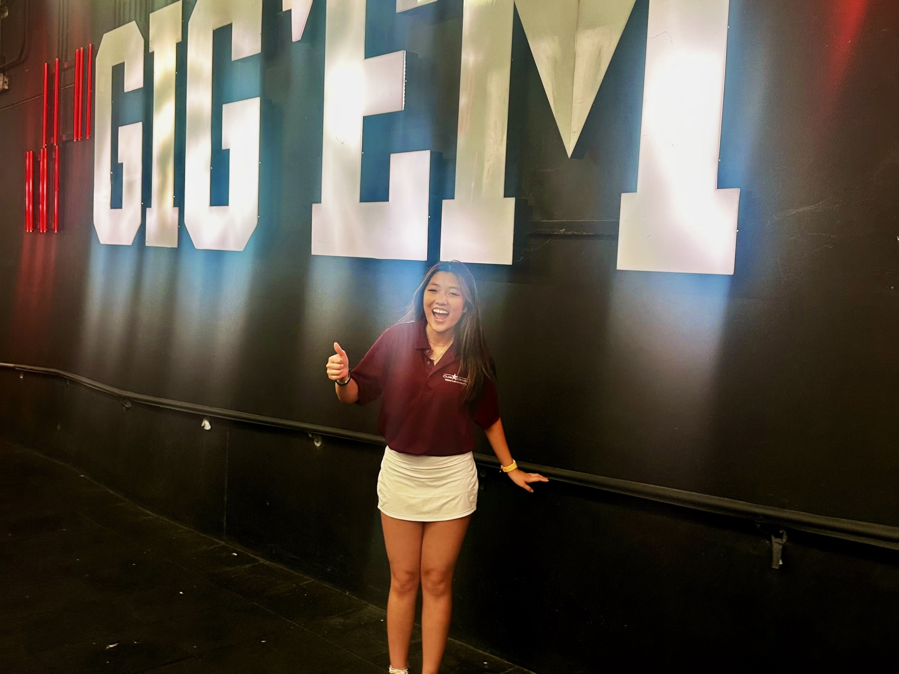
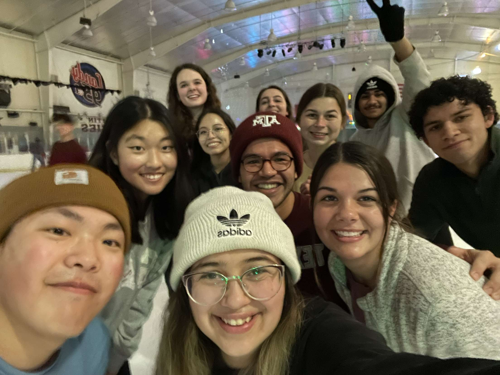

My Community Chronology.
Tracing my steps as a student leader and mentor. Each milestone represents a commitment to building a stronger, more connected community.
Formal Chair | Aggie Icers
As Formal Chair for Aggie Icers and the Texas A&M Hockey community, I led the planning and execution of formal events for approximately 200 attendees. I coordinated all major logistics including venue arrangements, food ordering and distribution, budgeting, and event scheduling to ensure a seamless experience for all participants. I also led a team of 7 members responsible for event decoration, delegating tasks, managing timelines, and ensuring cohesive event design and execution.

Recruitment Chair | Aggie Icers
I led the recruitment process for the organization, managing over 200 applicants and successfully onboarding 30+ new members. I coordinated and organized recruitment events, including outreach, scheduling, and applicant engagement, to ensure a structured and accessible selection process.

Front Desk Assistant | Texas A&M Career Center
As a Front Desk Assistant at the Texas A&M Career Center, I serve as the first point of contact for students, employers, and campus visitors. I provide a welcoming and professional environment while assisting with appointment scheduling, career resources, and general inquiries. I support daily office operations by ensuring smooth communication and access to services for students navigating career development resources.

Logistics Director | Elephant Walk (Texas A&M Senior Tradition)
As Logistics Director for Elephant Walk, I led end-to-end operational planning for one of Texas A&M’s largest senior traditions, coordinating the safe movement and experience of over 2,500 graduating students across campus. I managed event flow design, route logistics, volunteer coordination, and real-time execution to ensure a seamless procession honoring graduating seniors. Working closely with university staff, student leaders, and safety personnel, I helped translate a historic tradition into a highly organized, large-scale campus event while preserving its cultural significance.

Counselor | Fish Camp (Session A, Lime Camp Byrd)
I supported incoming freshmen in their transition to college life before the start of the academic year. I led small discussion groups, taught university traditions, and facilitated activities and skits designed to build connection, confidence, and community among students. Following the camp experience, I maintained ongoing mentorship relationships with freshmen throughout their first year, providing academic and personal support to help foster their success and sense of belonging.

Team Lead | T.U.R.T.L.E. Robotics
As Team Lead for a spherical balancing robot project at Texas A&M University, I organized weekly team meetings and coordinated parallel work across mechanical, electrical, and software subteams to ensure consistent progress and integration. I led system-level design of a BB-8–inspired balancing robot, overseeing the shell structure, internal drive mechanism, and sensor integration to support stable motion and control. I worked closely with teammates to align design decisions, resolve integration challenges, and maintain project timelines throughout development.
Member | Aggie Icers
Supported Texas A&M hockey by helping foster team spirit and assisting with game-day activities. I contributed to creating a positive and encouraging environment for players through attendance at games, support efforts, and team engagement throughout the season.

Counselor | Fish Camp (Session G, Purple Camp Shurtleff)
I supported incoming freshmen in their transition to college life before the start of the academic year. I led small discussion groups, taught university traditions, and facilitated activities and skits designed to build connection, confidence, and community among students. Following the camp experience, I maintained ongoing mentorship relationships with freshmen throughout their first year, providing academic and personal support to help foster their success and sense of belonging.

Member | IEEE
I engaged with a global community of students and professionals focused on advancing technology and engineering innovation. I participated in technical workshops, events, and networking opportunities to strengthen my foundational engineering knowledge and develop relevant technical and professional skills.
Social Counselor | Freshman Council
Organized and facilitated social events for over 70 members, creating opportunities for engagement, connection, and community building within the organization. I coordinated event logistics, planned activities, and helped ensure a welcoming and inclusive environment that fostered camaraderie and strengthened member relationships.

Counselor | Fish Camp (Session H, Yellow Camp Baumann)
Supported incoming freshmen in their transition to college life prior to the start of the academic year. I worked with a camp cohort of over 150 students and led small discussion groups of 10+ students, facilitating conversations, teaching university traditions, and guiding activities designed to build connection and confidence. Following the camp experience, I maintained ongoing mentorship relationships throughout their first year, serving as a support system to promote student success and a sense of belonging.

Director of Logistics | Freshman Festival
Planned the first-ever virtual orientation week for 400 incoming engineering students.

Member | Freshman Council
Contributed to the member development committee by helping plan fall and spring retreats, coordinating themes, logistics, and activities designed to strengthen community and engagement within the organization. I also assisted in outreach efforts by inviting campus organizations and speakers to weekly meetings, providing members with opportunities to develop professional skills, expand their networks, and explore career pathways.

Member | Class Council
Actively participated in planning and supporting class traditions and campus-wide events that foster school spirit and student connection. I represented my class in discussions to ensure student voices were heard, while collaborating with fellow council members to design new activities, address concerns, and strengthen community engagement across campus.

Leadership Philosophy & Snapshot
The Mentorship Loop
"Leadership is not defined by title, but by how many people you elevate with you. I focus on building systems where upperclassmen actively mentor freshmen, creating a self-sustaining cycle of growth across technical and community organizations."
Large-Scale Events Organized

Collaborative Success 2023
Members Engaged
Leadership Positions